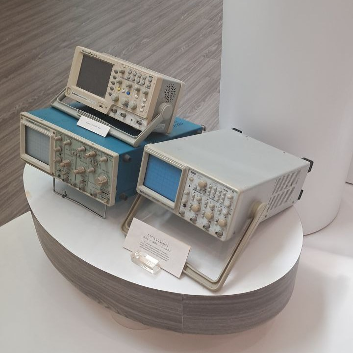
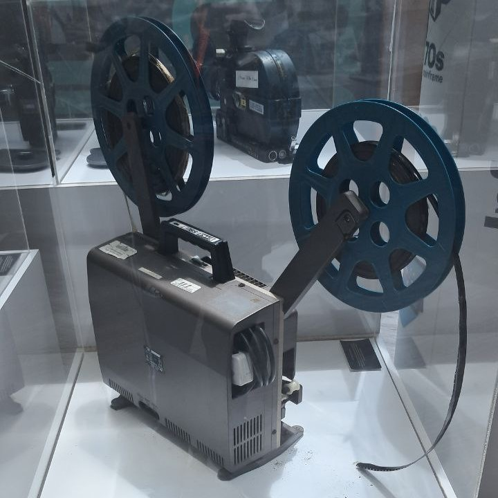

Artifacts

Oscilloscope
80s-90s-2000s

16mm Portable Film Projector
Late 1960s – 1980s
Select an Artifact
Select an artifact to view it in 3D.
Discover our campus landmarks and historical artifacts
80s-90s-2000s
Late 1960s – 1980s
Select an artifact to view it in 3D.